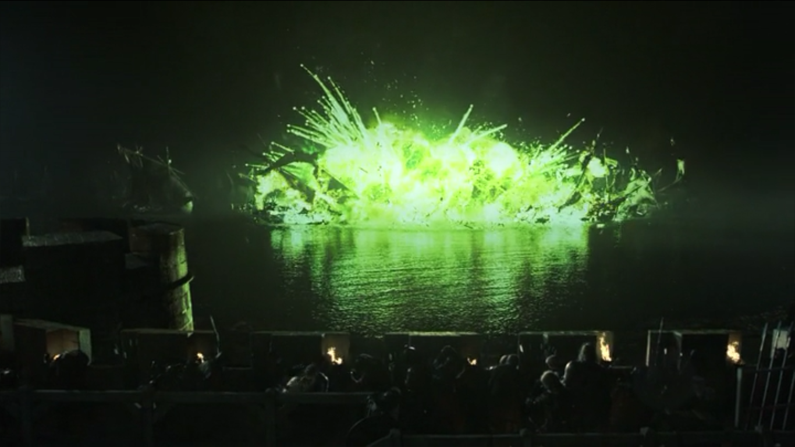
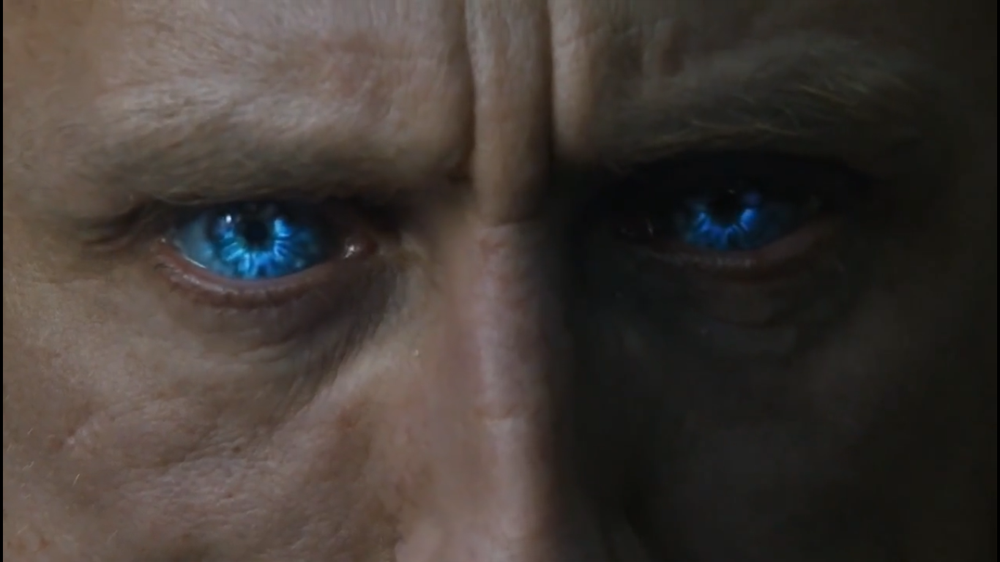

Having saved King's Landing from Stannis, Tyrion is promptly demoted by his disapproving father (who has never forgiven his son for claiming this mother in childbirth and for possessing a functioning moral compass). Rather more popular in the capital is the ambitious Margaery Tyrell (Natalie Dormer). Renly's widow has displaced Sansa and is now betrothed to Joffrey. Sansa, Tywin has decreed, will be married off to the reluctant Tyrion (with uncommon decency he declines to consummate the nuptials).
Far to the north, Jon Snow finally meets the Wildling's semi-mythic King beyond the Wall Mance Rayder (Ciaran Hinds) and agrees they have a common enemy in the Walkers.
stannis
Things are going less well for Theon Greyjoy, whose botched conquest of Winterfell has seen him fallen into the clutches of a mysterious torturer. However, the true losers this season are Robb and Catelyn Stark (Michelle Farley). After falling in love with healer Talisa (Oona Chaplin), Robb backs out of an arranged marriage to Roslin, daughter of his ally Lord Walder Frey. She will instead be hitched to Edmure Tully – and the Starks are invited!
Thus is the table set for the notorious Red Wedding. The Freys and Boltons, striking a secret deal on Tywin Lannister, turn on the Starks, cutting down Catelyn, Robb and Robb's pregnant intended. "The Lannisters send their regards," snarls Roose Bolton as he stabs Talisa in the womb.
The Red Wedding

The Red Wedding Arriving in time for the butchery is Arya Stark, reluctantly taken under the wing of the "Hound" Sandor Clegane (Rory McCann), formerly Joffrey's personal butcher. With the rest of the family dead or in jeopardy, meanwhile Bran continues north. Haunted by visions he resolves to go beyond the Wall and find the "Three-Eyed Raven", who holds the secret to his burgeoning ability to project his mind into the body of a dire wolf. He is accompanied by Hodor and two new companions, Meera and Jojen Reed. Elsewhere, Daenerys's plans to conquer Westeros gather momentum. On her wanderings across Essos, she garners an army of "Unsullied" warriors and receives counsel from two disillusioned refugees from the Seven Kingdoms. Ser Barriston Selmy and Jorah Mormont (Iain Glen). With the cities of Slavers Bay falling to her one by one, a new power is rising in the East. How long before it turns its attention West?